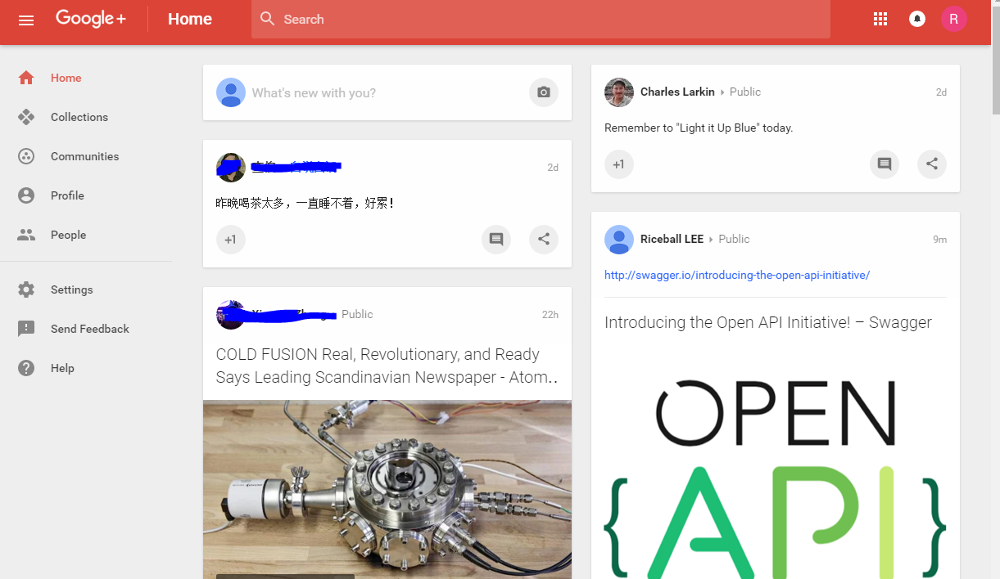
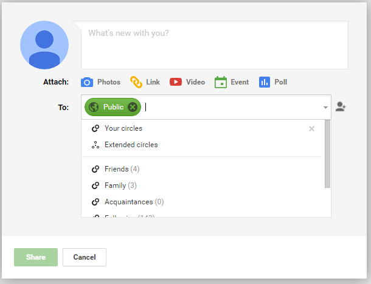
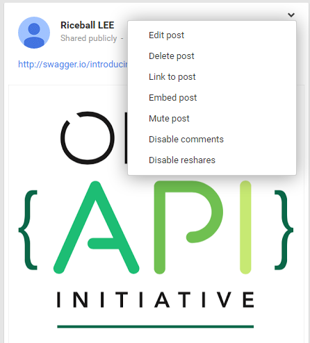
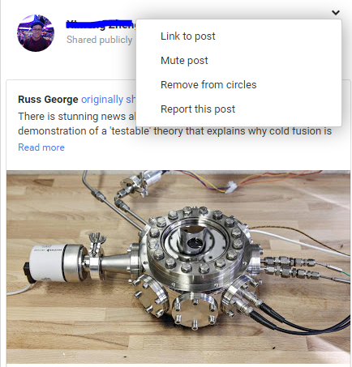

就目前的互联网来说，最火爆的当属于社交媒体。从产品形态上来区分，当前的社交媒体主要有两大流派，一是以短信息为中心的其代表twitter；二是以社交圈子为中心其代表为Facebook。
现状
虽然目前大家都在关注微博类和社交类，但是事实上社交媒体本身可不仅仅限于此。下面一一絮叨之。社交媒体，从产品层面上来看固有元素有二：内容（Contents）和SNS（社会化网络关系）。
一、内容
首先说说内容，或者叫媒体，又或者叫信息。内容可以从内容的量的多寡来看，也可以从内容的类型来看。
内容的量
从内容的量来看，大致可以分为3级：1、大量/巨量内容；2、短篇内容 ；3、百字短文
- 大量/巨量内容
- 这个是以小说或者电视剧为代表，通常出现在网站上是以连载形式出现。
- 短篇内容
- 这个是以博文或者新闻为代表。
- 百字短文
- 这个是以微博或者短信为代表。
内容的类型
从内容的类型来看，大致可以分为：
- 视频动画；
- 音乐
- 图片
- 富媒体
- 富文本
- 垂直领域的内容（鲜花、汽车、房屋、…）
二、SNS
从社交关系来看，可以从两个维度来看：一是私密维度；二是关系维度。
从私有程度来看:
- 完全私有 这个是以短信/kik 为代表。
- 部分私有 这个是以聊天室，FaceBook为代表。
- 完全开放 这个是以微博(twitter)为代表。
从关系程度来看：
- 双向关系：FaceBook
- 单向关系：Twitter
- 反向单向关系：Path (别人需要邀请你，你才能关注)
- 弱关系：仅当在指定的地点、时间才会有某种关系
- 没有关系：网上闲置租车(UBER)
将它们每一个联系组织起来就会有不同的玩法，也许会是一个好的产品，也许不是。是不是好的产品的关键是是否能满足某类人的某种需求。比如下面的例子：
FaceBook：
- 默认只有朋友可见(部分私有)，私有程度可以在任何人，朋友的朋友，只有朋友，定制程度切换
- 双向关系(互相收听)
- 字数限制：貌似没有
- 媒体类型：要么文本、要么图片、要么视频、要么链接、要么问题
- 评论：有
Twitter:
- 默认完全开放，私有程度可以在完全私有和完全开放之间切换
- 单向关系
- 没有关系：通过指定人(@)收听
- 字数限制: 140，
- 媒体类型：仅限文本
- 评论：无
OK，现在是回过头来看看Google+的时候了。我以为G+对圈子的激动人心的创新在于，通过圈子，把双向关系变成“单向”：你只需要维护好你自己的圈子就行了，这实质上就一个以个人为中心(P2P)的圈。而无需去操心别的。当然如果有需求要强制别人去阅读你推送的消息（已阅），而对于这样的场景可能G+并不太合适（从技术上说只要G+API推出后也许会出现某类应用满足这个需求）。
Google+

Google+：
- 公开关系
- 圈子关系：通过圈子来决定信息的流转
- 没有关系：通过指定人(@或+)收听
- 字数限制：貌似没有
- 媒体类型：带格式的文本(一个消息可以插入多张图片或者一个视频或者一个链接
- 评论：有
- LBS 位置
圈子（“Circle”）
Google对于社交网络进一步思索和创新首先在于圈子（“Circle”），通过圈子来完成轻松的对信息的私有程度进行缩放的过程。你只需组织你的联系人到不同的圈子即可。
通过圈子可以针对你的不同通讯录上的联系人灵活的介于公开和非公开之间的社交领域去分享信息。所有的信息的推送或者获取都将基于圈子。信息的推送有点类似于邮件组的感觉，在理解了圈子的含义后，我感觉比微博和facebook的推送机制好用多了。当然，理解圈子会是个槛。
如果某人将你圈了进来，你会收到邮件通知和页面通知（在你的姓名右上角），你可以决定是否将对方也圈起来。这样，他推送到消息将会出现在你圈的圈子中，当然不圈也没有关系，这个时候，他推送的消息只会出现在Incoming的圈子里的。
当你post一张相片或者更新某个玩意的时候，如何通过圈子控制该消息的私密程度？请看下面：

- Public: 完全公开，任何人都能看到
- 特定的圈子：可以选择多个你建立的圈子
- Your circles: 你的建立的所有的圈子里的人都可以看到
- Extended Circles：扩展圈子，你的圈子的人以及圈子的圈子的人都可以看到
- 特定的联系人：选择多个特定的联系人(email)可以看到
我以为G+对圈子的激动人心的创新在于，通过圈子，把双向关系变成“单向”：你只需要维护好你自己的圈子就行了，这实质上就一个以个人为中心(P2P)的圈。而无需去操心别的。当然如果有需求要强制别人去阅读你推送的消息（已阅），而对于这样的场景可能G+并不太合适（从技术上说只要G+API推出后也许会出现某类应用满足这个需求）。
另外一些微小的改进也是很有爱的，针对POST：
自己发的：

- Edit this post: 编辑
- Delete this post: 删除
- Disable comments：禁止评论
- Disable reshare：禁止分享
别人发的：

- Link to this post: 链接
- Report abuse：滥用
- Mute this post：不想再看到这个帖子把它沉底吧
- Block this persion：不想再看到此人发的贴
另外蛮有意思的是hangouts，创建多人视频群聊，以及Sparks 基于搜索的主题关注（要是能集成Google Reader的RSS，才有大用）。